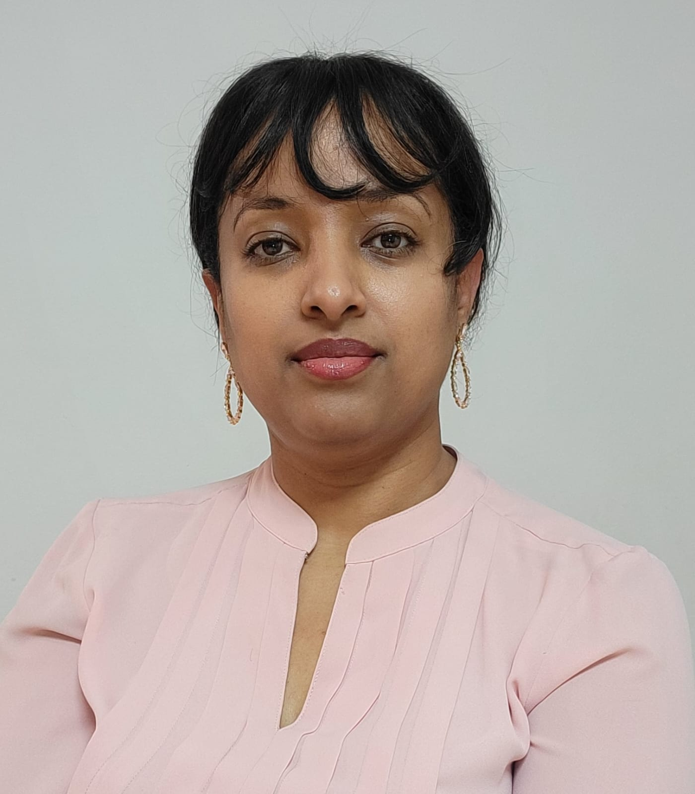

Betty

Summary
I am a Full Stack Web Developer with hands-on experience in building websites and enterprise applications. I am skilled in designing and developing web and mobile applications throughout the entire Software Development Life Cycle (SDLC) using technologies like Node.js, MySQL, Bootstrap, React, and Express.js. Software development professional with experience in developing and designing web applications using HTML, CSS, JavaScript, Angular, Node.js, and React. Adept at developing and deploying complex backend systems, web services and databases.
Education
- May 2021 - May 2021 Certificate in basics of HTML,CSS and JavaScript - MicroTech, Silver Spring, MD
- January 2018 - May 2020 associate degree - Montgomery Community College Rockville, MD
- March 2022 - September 2022 Certificate in Full Stack Web Development - Evangadi Tech Silver Spring, MD
Work experience
- Learned today's cutting-edge development technologies, through an advanced curriculum and project-based structure.
- Built semantically structured full-stack web applications using HTML, CSS, JavaScript, jQuery, Object-Oriented Programming, Git, React, and Node.
- Collaboratively and independently designed and built web applications with front-end and back-end development.
- Implementation of a responsive UI which will scale itself depending on the device, platform and browser using React.JS, HTML5, CSS3, Material UI and Bootstrap.
- Testing front -end code in multiple browsers to ensure cross-browsers compatibility.
- Successfully completed an immersive and rigorous twenty-five (25) weeks of Full Stack Web Development course.
Projects
- Designed and developed single page applications using HTML5, CSS3, JavaScript, React.JS and Redux
- Built Netflix-clone using react which is an online video streaming service..
- Created a Netflix clone using React, offering online video streaming services.
- Recreated Apple's website using React - created React components for various pages and sections - Integrated Apple's YouTube channel with the website using REST API
- Worked on developing CRUD applications using MERN Stack (MongoDB, MySQL, Express, React.JS and Node.JS) and REST based API.
Contact Me
Tel: 5122263807
Email: btnegussie@gmail.com
Address:
Sliver Spring
Maryland
USA